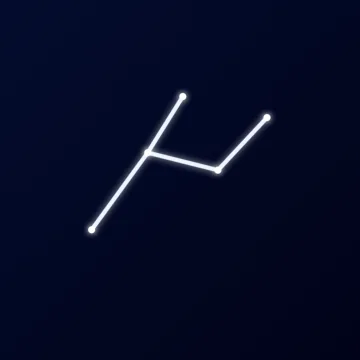
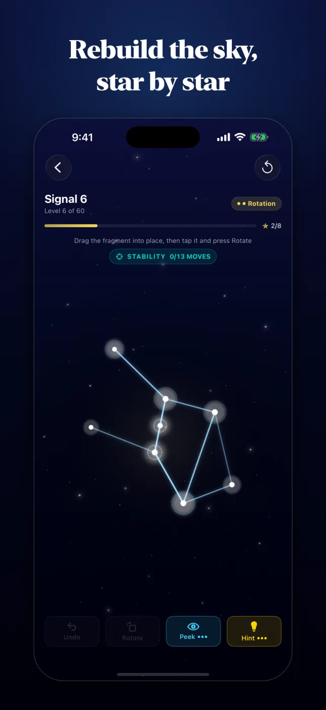
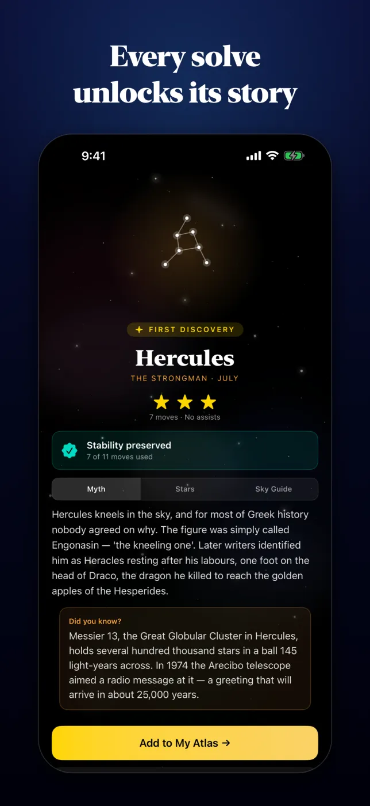
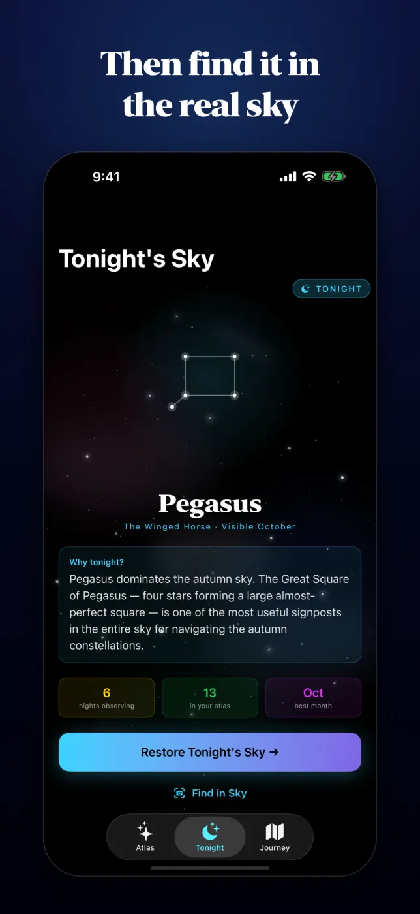
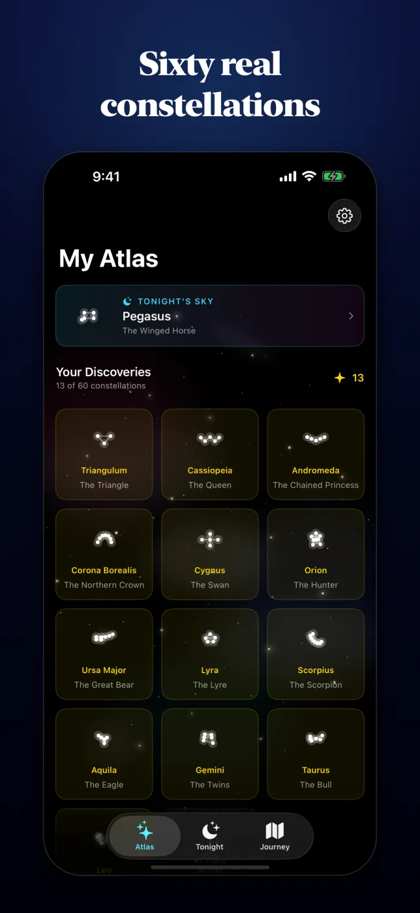
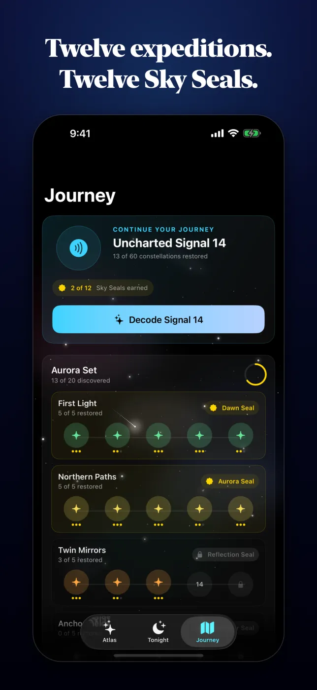
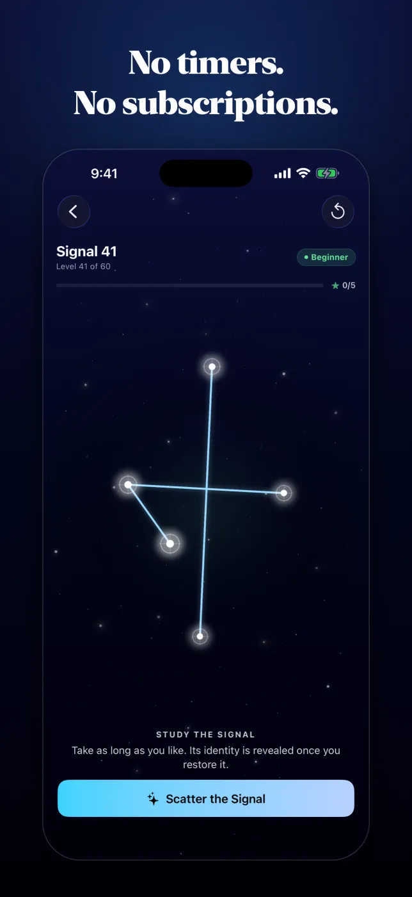

Games • Puzzle
Version 4.0 iOS 17+ 60 Constellations AR Sky Guide OfflineConstellation Restore Game
Decode a signal. Restore its constellation. Discover its story. Then find it in the real night sky. Version 4.0 rebuilds the game on sixty genuine constellations — from Orion and the Big Dipper to the Southern Cross and the Keel of the Argo — each with its own geometry, mythology, featured star and observing guide.
Download on the App StoreOne purchase, sixty constellations. No ads, no subscriptions, no accounts, no tracking. Requires iOS 17 or later; Find in Sky needs camera and location access and works best outdoors on a physical iPhone.
Screenshots
Restore It, Discover It, Then Look Up






Features
Restore It, Then Find It
Sixty Real Constellations
Every level is a genuine constellation with its own geometry, organised into twelve named expeditions across three packs. Forty of the sixty are new in 4.0 — Draco, Auriga, Cepheus, Sagittarius, Ophiuchus, Eridanus, Carina and thirty more.
Study Without a Timer
Each signal opens fully formed and stays that way until you tap Scatter the Signal. Take a second or take a minute — nothing counts down, and the puzzle waits for you.
Undo, Free and Unlimited
Drag individual stars or whole rigid fragments, select a fragment and rotate it in precise 60-degree steps, and take back any move at any time without spending anything.
Honest Assists
Three peeks and three hints per board, and both count toward your rating. The board holds still while you peek, and a stray tap can no longer spin a cluster and quietly cost you a star — rotation is its own control now.
Sky Seals and Expeditions
Complete five-puzzle chains to earn collectible Sky Seals — twelve expeditions, twelve seals, from the Dawn Seal to the Argo Seal. A Daily Challenge and a streak bring you back.
Discovery Cards
Each solve reveals the constellation and opens its card: the myth behind it, its featured star and how far away that star is, and a practical guide to spotting it. Add it to your Atlas and revisit it any time.
Find in Sky
Point your camera upward and a live overlay draws the constellation over the real stars, with a direction guide when it is off-screen. Camera and location processing stay on your device.
Tonight's Sky
See which constellation is featured tonight and why it is worth finding, track a nightly observing streak, and jump straight into the real-sky finder from there.
Calm by Design
Layered ambient sound, gentle haptics, and a background that recedes so the puzzle is always the brightest thing on screen. A colorblind-friendly palette, adjustable glow, full Dynamic Type, and a starfield that stops completely under Reduce Motion.
Need Help?
Support and Privacy
Need help with Find in Sky, Tonight's Sky, Atlas unlocks, Sky Seals, peeks and hints, or camera and location access? Use the support page or review the privacy policy below.